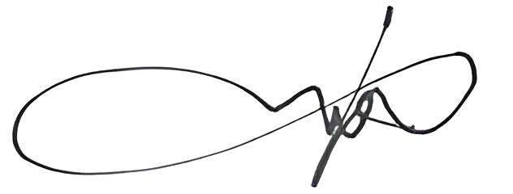

<div style="width: 794px; height: 1123px; position: relative; text-align: center; padding: 50px; background-image: url('./img/background.png'); background-size: cover;">
    <div style="padding-top: 75px; padding-right: 50px; padding-bottom: 50px; padding-left: 50px;">
        <div style="font-family: Arial, sans-serif; font-size: 25px; font-weight: bold; margin-top: 20px; margin-bottom: 20px;">Kompetensi :</div>
        <div style="border: 2px solid #F58614; border-bottom: unset; padding: 10px; font-family: Arial, sans-serif; font-size: 25px; font-weight: bold;">Materi Pelatihan</div>
        <div style="display: flex; justify-content: space-between;">
            <div style="width: 48%; border: 2px solid #F58614; border-right: unset; padding: 10px; text-align: left;">
                <div style="font-family: Arial, sans-serif; font-size: 17px; font-weight: bold;">Materi Kelas</div>
                <ul style="font-family: Arial, sans-serif; font-size: 17px; padding-left: 20px;">
                    <li>Defensive Driving Training</li>
                    <li>Teknik Pengoperasian Jalan Licin</li>
                    <li>Safety, Metode dan Teknik Operasi</li>
                    <li>Instrument Panel</li>
                    <li>Maintenance / P2H</li>
                    <li>Pengenalan Produk, Komponen dan Sistem Basic Safety</li>
                    <li>Fatigue Management</li>
                </ul>
            </div>
            <div style="width: 48%; border: 2px solid #F58614; padding: 10px; text-align: left;">
                <div style="font-family: Arial, sans-serif; font-size: 17px; font-weight: bold;">Praktikum</div>
                <ul style="font-family: Arial, sans-serif; font-size: 17px; padding-left: 20px;">
                    <li>Maintenance / P2H</li>
                    <li>Zig Zag, Parkit T, Pengoperasian 4x4</li>
                    <li>Travelling Jalan Raya dan Defensive Driving</li>
                </ul>
            </div>
        </div>
        <div style="border: 2px solid #F58614; border-top: unset; border-bottom: unset; display: flex; text-align: center;">
            <div style="width: 25%; padding: 10px; font-family: Arial, sans-serif; font-size: 17px; font-weight: bold; border-right: 2px solid #F58614;">Nilai Post Test</div>
            <div style="width: 25%; padding: 10px; font-family: Arial, sans-serif; font-size: 17px; font-weight: bold; border-right: 2px solid #F58614;">Nilai Praktikum</div>
            <div style="width: 25%; padding: 10px; font-family: Arial, sans-serif; font-size: 17px; font-weight: bold; border-right: 2px solid #F58614;">Nilai Rata-rata</div>
            <div style="width: 25%; padding: 10px; font-family: Arial, sans-serif; font-size: 17px; font-weight: bold;">Trainer</div>
        </div>
        <div style="border: 2px solid #F58614; border-top: unset; display: flex; text-align: center;">
            <div style="width: 25%; text-align: center; justify-content: center; display: flex; align-items: center; padding: 10px; font-family: Arial, sans-serif; font-size: 17px; border-right: 2px solid #F58614;">83,8</div>
            <div style="width: 25%; text-align: center; justify-content: center; display: flex; align-items: center; padding: 10px; font-family: Arial, sans-serif; font-size: 17px; border-right: 2px solid #F58614;">81,7</div>
            <div style="width: 25%; text-align: center; justify-content: center; display: flex; align-items: center; padding: 10px; font-family: Arial, sans-serif; font-size: 17px; border-right: 2px solid #F58614;">82,75</div>
            <div style="width: 25%; text-align: center; padding: 10px; font-family: Arial, sans-serif; font-size: 17px;">
                
                <div style="font-family: Arial, sans-serif; font-size: 17px; margin-top: 10px;">Dessaily Wahyu Wijanarko</div>
            </div>
        </div>
    </div>
</div>